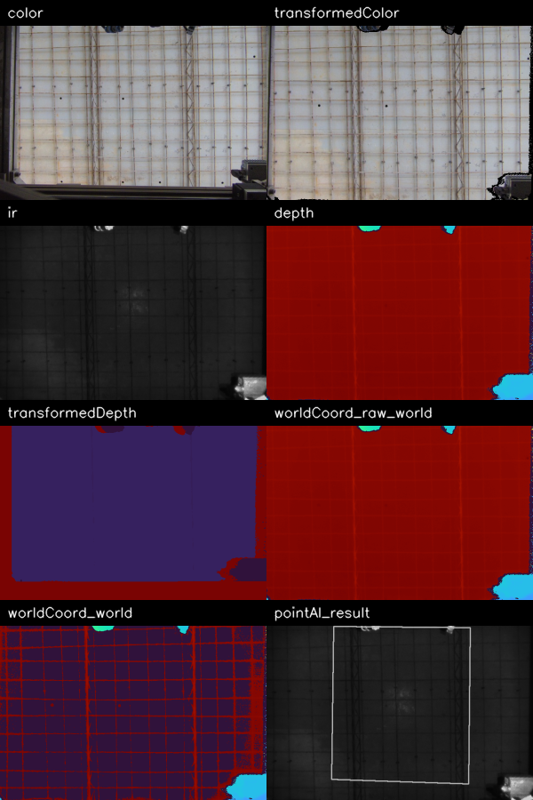

一句话结论
现在的梁筋检测不是实例分割，而是 detect_workspace_s2_structural_edge_bands：只在 rectified 工作区左右边缘寻找宽而强的竖向响应带。画面里有梁筋但 beam_bands=[]，说明当前规则没有触发，不能代表“没有梁筋”。
推荐路线：不要继续只调阈值。下一代主方案应做“物理尺度归一 BEV + 多模态钢筋概率图 + 多尺度脊线中心线 + 3D/高度分层 + 图优化实例分割”，深度模型作为训练后校验或替代分割头，而不是裸 SAM/裸 YOLO 直接上线。
本机可用视觉模态
本机当前不仅有 IR 和 depth，还有 color、transformedColor、transformedDepth、worldCoord/raw_world_coord、worldCoord/world_coord、depthCloudPoint。深度世界坐标和点云是区分梁筋/普通钢筋/地板缝的关键。

| Topic | Captured | Encoding | Shape | Min | Max | Mean | Error |
|---|---|---|---|---|---|---|---|
/Scepter/color/image_raw | yes | bgr8 | [480, 640, 3] | 3.0 | 197.0 | 131.08047526041668 | |
/Scepter/color/camera_info | yes | ||||||
/Scepter/depth/image_raw | yes | 16UC1 | [480, 640] | 0.0 | 1829.0 | 1634.4134537760417 | |
/Scepter/depth/camera_info | yes | ||||||
/Scepter/ir/image_raw | yes | 8UC1 | [480, 640] | 2.0 | 203.0 | 28.628772786458335 | |
/Scepter/ir/camera_info | yes | ||||||
/Scepter/transformedColor/image_raw | yes | bgr8 | [480, 640, 3] | 0.0 | 198.0 | 139.71970703125 | |
/Scepter/transformedDepth/image_raw | yes | 16UC1 | [480, 640] | 318.0 | 65535.0 | 14461.276168619792 | |
/Scepter/worldCoord/raw_world_coord | yes | 32FC3 | [480, 640, 3] | 0.0 | 1826.0 | 1634.401611328125 | |
/Scepter/worldCoord/world_coord | yes | 32FC3 | [480, 640, 3] | 0.0 | 2027.0 | 359.0205078125 | |
/Scepter/worldCoord/camera_info | yes | ||||||
/pointAI/result_image_raw | yes | mono8 | [480, 640] | 2.0 | 203.0 | 30.708502604166668 | |
/pointAI/line_image | no | topic type unavailable | |||||
/perception/lashing/result_image | no | timeout exceeded while waiting for message on topic /perception/lashing/result_image | |||||
/perception/lashing/points_camera | no | timeout exceeded while waiting for message on topic /perception/lashing/points_camera | |||||
/perception/lashing/workspace/quad_pixels | yes | ||||||
/coordinate_point | no | timeout exceeded while waiting for message on topic /coordinate_point | |||||
/Scepter/depthCloudPoint/cloud_points | yes | ||||||
/Scepter/depth2colorCloudPoint/cloud_points | no | timeout exceeded while waiting for message on topic /Scepter/depth2colorCloudPoint/cloud_points |
方法遍历矩阵
| 方法 | 核心 | 跨尺度鲁棒性 | 速度 | 数据需求 | 判断 |
|---|---|---|---|---|---|
| 当前梁筋 edge-band mask | 二维组合响应的边缘宽强带 | 低 | 快 | 无 | 只适合左右边缘粗结构；会漏内部梁筋/弱梁筋 |
| 阈值+形态学/连通域 | IR/depth/height 上阈值再开闭运算 | 低-中 | 快 | 无 | 尺度和光照变化一大就漂，适合做候选不是最终 |
| Hough/LSD 线检测 | 直线/线段检测 | 中 | 快 | 无 | 对直线好，对弯曲钢筋和交叉处实例分离差 |
| Steger / Hessian ridge | 多尺度中心线+宽度估计 | 中-高 | 快-中 | 无 | 适合钢筋这种细长结构，是短期主力候选 |
| Frangi vesselness | 多尺度管状增强 | 中-高 | 快-中 | 无 | 可增强钢筋概率图，但交点/密集平行线需图优化 |
| 点云切片/高度分层 | worldCoord/PointCloud2 中按高度和截面聚类 | 高 | 中 | 无 | 对梁筋/层级/尺度最关键，应进入主方案 |
| U-Net/DeepLab 语义分割 | 像素级 rebar/beam/floor/tcp 类别 | 高 | 中-慢 | 需要标注 | 输出非实例，需要骨架/连通图拆实例 |
| Mask R-CNN/BA-Mask-RCNN | 实例 mask | 高 | 慢-中 | 需要标注 | 论文中 rebar 检测效果强，但 CPU 需优化或裁剪 |
| YOLO-seg/YOLO11-seg | 实时实例分割 | 高 | 中 | 需要标注 | 本机已有 ultralytics/onnxruntime，无 CUDA；要实测 CPU 100ms |
| SAM/SAM2 | 通用分割/交互标注 | 中 | 慢 | 少量提示 | 本机未装；更适合辅助标注，不建议直接当现场主链 |
| 推荐混合方案 | 物理归一BEV + 多模态ridge + 图优化 + 小模型分割校验 | 最高 | 可控 | 少量标注 | 最符合不同尺度鲁棒与100ms工程约束 |
推荐技术路径
- 同步采集并物理归一化：把 IR/depth/color/worldCoord 投到同一个手动工作区 BEV，固定 mm/px，而不是固定像素尺度；这一步解决“远近尺度变化导致峰值宽度变”的根因。
- 多模态概率图：组合 IR 暗线、depth 凹凸/梯度、worldCoord 高度、点云局部法向/曲率，生成
P(rebar)、P(beam)、P(floor seam)、P(tcp/occluder)。 - 多尺度脊线中心线：用 Steger/Hessian/Frangi 类多尺度线结构检测，输出中心线、宽度、方向、响应强度，而不是只用一维 profile 峰值。
- 实例图构建：骨架化后建立图：边是钢筋实例候选，节点是交叉点；通过方向连续性、宽度稳定性、3D 高度层级、梁筋类别把普通钢筋和梁筋拆开。
- 全局网格约束：保留 PR-FPRG 的周期/相位优势，但从“决定线在哪里”降级为“约束实例图不乱跑”。曲线只允许在实例图中微调，不能追单条强地板缝。
- 绑扎点生成：只取普通钢筋实例之间的交点；梁筋实例上的点过滤，但普通钢筋允许穿过梁筋。过滤要发生在点层，不删除整条钢筋实例。
- 深度模型增强：用当前规则和人工修正生成伪标签，训练小型 YOLO-seg/U-Net/Mask R-CNN 分割
ordinary_rebar、beam_rebar、floor_seam、tcp。SAM 只建议做标注辅助。 - 速度落地：先 CPU OpenCV/Numpy 原型评估；热点下沉 C++/OpenCV ximgproc/ONNXRuntime。当前本机无 CUDA，不能假定大模型实时。
为什么这条路线能解决你指出的问题
- 梁筋漏检：不再只找边缘宽带，而把梁筋作为实例类别，从 2D 宽度、3D 高度/层级、方向和时序稳定性联合判断。
- 地板缝误识别：地板缝在 2D 响应像线，但在 depth/worldCoord/高度层级上不像凸起钢筋；融合后会被降权。
- 曲线跑偏：曲线不再自由追强响应，而只能沿实例图和全局网格约束微调。
- 远距离差：固定物理分辨率 + 多尺度 ridge + 必要时主动调整相机姿态；如果投影宽度低于传感器分辨极限，则需要移动相机，不可能靠算法凭空恢复。
文献依据
- RGB-D rebar spacing/clearance inspection
- Sparse-data deep learning for rebar segmentation
- Boundary-Aware Mask R-CNN for automated rebar inspection
- MaskID dense rebar counting with Mask R-CNN
- Mask R-CNN paper
- U-Net paper
- Segment Anything paper
- Steger curvilinear structures detector
- Frangi multiscale vessel enhancement
- Ultralytics segmentation docs